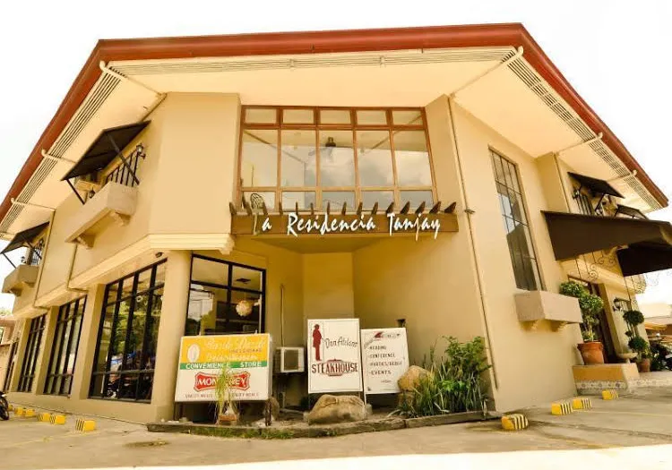

hotel de tanjay
Stop at La Residencia Tanjay Hotel to discover the wonders of Tanjay City. Featuring a complete list of amenities, guests will find their stay at the property a comfortable one. All the necessary facilities, including free Wi-Fi in all rooms, express check-in/check-out, luggage storage, Wi-Fi in public areas, car park, are at hand. Guestrooms are fitted with all the amenities you need for a good night's sleep. In some of the rooms, guests can find internet access – wireless, internet access – wireless (complimentary), non smoking rooms, air conditioning, desk. Recuperate from a full day of sightseeing in the comfort of your room or take advantage of the hotel's recreational facilities, including massage. No matter what your reasons are for visiting Tanjay City, La Residencia Tanjay Hotel will make you feel instantly at home.
